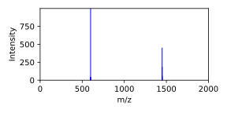

[1]:
#!python
import pandas as pd
import numpy as np
import pyarrow as pa
import pyarrow.parquet as pq
import time
import string
import sys
from types import MethodType
[2]:
ALPHABET = np.array(list(string.ascii_letters))
def random_string(length):
return "".join(np.random.choice(ALPHABET, size=length))
def create_dataset(rows=5, cols=[int, float, str, list], names=ALPHABET):
rng = np.random.default_rng()
data = {}
for i in range(len(cols)):
if cols[i] == int:
data[names[i]] = rng.integers(0, 100, size=rows)
elif cols[i] == float:
data[names[i]] = rng.random(size=rows)
elif cols[i] == str:
vfunc = np.vectorize(random_string)
rand_lengths = rng.integers(5, 25, size=rows)
data[names[i]] = vfunc(rand_lengths)
elif cols[i] == list:
larr = []
for j in range(rows):
rand_length = rng.integers(5, 25, size=1)
lst = rng.random(rand_length)
larr.append(lst)
data[names[i]] = larr
return pa.table(data)
def table_to_struct(table):
fields, arrs = [], []
for column_index in range(table.num_columns):
fields.append(table.field(column_index))
arrs.append(table.column(column_index).flatten()[0].chunks[0])
return pa.StructArray.from_arrays(arrs, fields=fields)
def struct_to_table(struct):
fields, arrs = [], []
for x in struct.slice(0, 1)[0].keys():
fields.append(x)
arrs.append(st.field(x))
return pa.table(arrs, fields)
def struct_view(struct_name, parent):
class struct_accessor:
def __init__(self, name, parent):
self.struct_name = name
self.parent = parent
def struct(self):
return self.parent.table.column(self.struct_name).slice(self.parent.idx, 1)[0]
def get(self, str):
if hasattr(self, str):
attr = getattr(self, str)
if attr == MethodType:
return attr()
return attr
return None
def add_accessor_fn(inst, name, type):
fn_name = name
def fn_list(self):
return self.struct().get(name).values.to_numpy()
def fn_scalar(self):
return self.struct().get(name).as_py()
if pa.types.is_list(type) or pa.types.is_large_list(type):
setattr(inst, fn_name, MethodType(fn_list, inst))
elif pa.types.is_struct(type):
raise NotImplementedError
else:
setattr(inst, fn_name, MethodType(fn_scalar, inst))
inst = struct_accessor(struct_name, parent)
for name, val in inst.struct().items():
add_accessor_fn(inst, name, val.type)
return inst
def row_view(table, idx=0):
class row_accessor:
def __init__(self, table, idx):
self.table = table
self.idx = idx
def get(self, str):
if hasattr(self, str):
attr = getattr(self, str)
if attr == MethodType:
return attr()
return attr
return None
def add_accessor_fn(inst, name, type):
#fn_name = "get_" + name
fn_name = name
def fn_list(self):
values = self.table.column(name).slice(self.idx, 1)[0].values
if values:
return values.to_numpy()
return None
def fn_scalar(self):
return self.table.column(name).slice(self.idx, 1)[0].as_py()
if pa.types.is_list(type) or pa.types.is_large_list(type):
setattr(inst, fn_name, MethodType(fn_list, inst))
elif pa.types.is_struct(type):
sv = struct_view(name, inst)
setattr(inst, fn_name, sv)
else:
setattr(inst, fn_name, MethodType(fn_scalar, inst))
inst = row_accessor(table, idx)
for col in table.column_names:
add_accessor_fn(inst, col, table.column(col).type)
return inst
def row_view_raw(table, idx=0):
class row_accessor:
def __init__(self, table, idx):
self.table = table
self.idx = idx
def add_accessor_fn(inst, name, type):
fn_name = "get_" + name
def fn(self):
return self.table.column(name).slice(self.idx, 1)[0]
setattr(inst, fn_name, MethodType(fn, inst))
inst = row_accessor(table, idx)
for col in table.column_names:
add_accessor_fn(inst, col, table.column(col).type)
return inst
[2]:
FILENAME = '/home/slottad/nist/gitlab/msdc_services/libraries/test.parquet'
table = pq.read_table(FILENAME)
table.to_pandas()
[2]:
| id | charge | ev | instrument | instrument_type | ion_mode | ionization | name | scan | nce | ... | precursor_intensity | precursor_massinfo | precursor_mz | spectrum_fp | spectrum_fp_count | spectrum_interval_fp | spectrum_interval_fp_count | peptide | mod_names | mod_positions | |
|---|---|---|---|---|---|---|---|---|---|---|---|---|---|---|---|---|---|---|---|---|---|
| 0 | 0 | 2 | 50.0 | None | None | None | None | AAAALGSHGSCSSEVEK/2_1(10,C,Carbamidomethyl) | None | 34.0 | ... | NaN | {'tolerance': 10.0, 'tolerance_type': 'ppm', '... | 830.8834 | [0, 0, 0, 0, 0, 0, 0, 0, 0, 0, 0, 0, 0, 0, 0, ... | 67 | None | NaN | AAAALGSHGSCSSEVEK | [Carbamidomethyl] | [10] |
1 rows × 24 columns
[49]:
table.column_names
table.column("annotations").type
[49]:
LargeListType(large_list<item: struct<ion_type: dictionary<values=string, indices=int32, ordered=0>, product_charge: int8, isotope: uint8, neutral_loss: dictionary<values=string, indices=int32, ordered=0>, position: uint16, end_position: uint16, aa_before: dictionary<values=string, indices=int32, ordered=0>, aa_after: dictionary<values=string, indices=int32, ordered=0>, ptm_before: dictionary<values=string, indices=int32, ordered=0>, ptm_after: dictionary<values=string, indices=int32, ordered=0>>>)
[51]:
FILENAME = '/home/slottad/nist/gitlab/msdc_services/libraries/test.parquet'
table = pq.read_table(FILENAME)
rv = row_view(table)
print(rv.get("junk"))
print(rv.get("annotations"))
print(rv.get("annotations")())
rv.spectrum_fp()
None
<bound method row_view.<locals>.add_accessor_fn.<locals>.fn_list of <__main__.row_view.<locals>.row_accessor object at 0x7fede011f280>>
None
[51]:
array([0, 0, 0, ..., 0, 0, 0], dtype=uint8)
[3]:
import masskit.utils.tables
row = masskit.utils.tables.row_view(table)
annotations = row.get("annotations")
annotations = None if annotations is None else annotations()
print(annotations)
None
[57]:
table = create_dataset(cols=[int, float, list])
st = table_to_struct(create_dataset(names=['john','paul','george', 'ringo']))
table = table.append_column("struct", st)
table.to_pandas()
#for i in range(st.type.num_fields):
# print(type(st.field(i)))
rv = row_view(table,3)
table.to_pandas()
[57]:
| a | b | c | struct | |
|---|---|---|---|---|
| 0 | 48 | 0.001494 | [0.20078429307909185, 0.2973041209842645, 0.35... | {'john': 42, 'paul': 0.6673878459460242, 'geor... |
| 1 | 36 | 0.721606 | [0.10996359120768118, 0.07010583536064863, 0.6... | {'john': 72, 'paul': 0.833692180317162, 'georg... |
| 2 | 33 | 0.528356 | [0.9182266825707263, 0.9205364956867594, 0.135... | {'john': 48, 'paul': 0.1061943272679774, 'geor... |
| 3 | 98 | 0.629610 | [0.8861506835702156, 0.16536409319567535, 0.04... | {'john': 84, 'paul': 0.08614252513341736, 'geo... |
| 4 | 81 | 0.708453 | [0.06307277064204375, 0.07555214819223965, 0.1... | {'john': 11, 'paul': 0.08171056669971388, 'geo... |
[59]:
rv.idx=3
print(rv.struct.john())
rv.idx=1
print(rv.struct.john())
rv.idx=0
print(rv.struct.john())
84
72
42
[5]:
type(table.column('a').chunk(0))
[5]:
pyarrow.lib.Int64Array
[7]:
table.take([1,3]).to_pandas()
[7]:
| a | b | c | struct | |
|---|---|---|---|---|
| 0 | 69 | 0.757979 | [0.7221621069643587, 0.49276953377866217, 0.34... | {'john': 23, 'paul': 0.02773443650653218, 'geo... |
| 1 | 10 | 0.571250 | [0.8241675056126545, 0.5230640134311503, 0.358... | {'john': 47, 'paul': 0.9859014647172522, 'geor... |
[11]:
table.take(pa.compute.index_in([69,66],value_set=table.column('a'))).to_pandas()
[11]:
| a | b | c | struct | |
|---|---|---|---|---|
| 0 | 69 | 0.757979 | [0.7221621069643587, 0.49276953377866217, 0.34... | {'john': 23, 'paul': 0.02773443650653218, 'geo... |
| 1 | 66 | 0.915094 | [0.2957497334359308, 0.5664697231529493, 0.175... | {'john': 30, 'paul': 0.5000038576126775, 'geor... |
[198]:
def row_copy(view):
class Row_Copy:
pass
cp = Row_Copy()
for name in view.table.column_names:
t = view.table.column(name).type
f = getattr(view, "get_"+name)
if pa.types.is_struct(t):
pass
else:
setattr(cp,name,f())
return cp
cp = row_copy(rv)
[202]:
#dir(cp)
cp.c
[202]:
array([0.85955441, 0.28593158, 0.10857431, 0.55889507, 0.1799482 ,
0.33433689, 0.15701087, 0.44872635, 0.46481567, 0.01582985,
0.90253203, 0.58748081, 0.22897347, 0.57033914])
[199]:
#cp.get_a()
---------------------------------------------------------------------------
AttributeError Traceback (most recent call last)
/tmp/ipykernel_112299/1228897693.py in <module>
----> 1 cp.get_a()
AttributeError: 'Row_Copy' object has no attribute 'get_a'
[4]:
table = create_dataset(rows=5, cols=[int,int,int])
table.to_pandas()
[4]:
| a | b | c | |
|---|---|---|---|
| 0 | 2 | 29 | 44 |
| 1 | 72 | 6 | 19 |
| 2 | 88 | 94 | 48 |
| 3 | 40 | 81 | 81 |
| 4 | 36 | 8 | 76 |
[19]:
ca = table.column("b")
for i in ca.iterchunks():
print(type(i))
table.append_column("A+B", pa.compute.add(table.column('a'), table.column('b'))).to_pandas()
<class 'pyarrow.lib.Int64Array'>
[19]:
| a | b | c | A+B | |
|---|---|---|---|---|
| 0 | 2 | 29 | 44 | 31 |
| 1 | 72 | 6 | 19 | 78 |
| 2 | 88 | 94 | 48 | 182 |
| 3 | 40 | 81 | 81 | 121 |
| 4 | 36 | 8 | 76 | 44 |
[30]:
struct = table_to_struct(create_dataset(rows=5, int_cols=1, float_cols=1, str_cols=1, list_cols=2))
table2 = table.append_column("struct", struct)
table2.to_pandas()
[30]:
| a | b | c | d | struct | |
|---|---|---|---|---|---|
| 0 | 11 | 0.639198 | XpEfneOQhrBoWcaCJMNQlvt | [0.39987697851536186, 0.4402834411641544, 0.86... | {'a': 72, 'b': 0.6525063345471586, 'c': 'TbNOL... |
| 1 | 73 | 0.868861 | FeFrYihRlXpqJYyGqZJQ | [0.4967560745720806, 0.7240392079967856, 0.340... | {'a': 93, 'b': 0.5686280599198626, 'c': 'YINfu... |
| 2 | 32 | 0.119972 | VTlomANSIFvscENhJtZjSY | [0.9969064284866098, 0.8052034681531476, 0.156... | {'a': 54, 'b': 0.08464787277823116, 'c': 'xTIO... |
| 3 | 94 | 0.909148 | VtbPAIaBhga | [0.07506368133485275, 0.9910808511500584, 0.96... | {'a': 66, 'b': 0.8478686528237297, 'c': 'RrsXg... |
| 4 | 24 | 0.782777 | tGAYLOaD | [0.4230672815939629, 0.27641148498436097, 0.18... | {'a': 36, 'b': 0.8617662177082072, 'c': 'toTeb... |
[46]:
rv = row_view(table2)
rv.get_b()
[46]:
0.6391978724061399
[47]:
rv = row_view_raw(table2)
rv.get_struct()
[47]:
<pyarrow.StructScalar: [('a', 72), ('b', 0.6525063345471586), ('c', 'TbNOLqlyxXKNhmnPDpWQ'), ('d', [0.4045044797519384, 0.21629264136170423, 0.16584800697438495, 0.7311778425124787, 0.8529078326022611]), ('e', [0.8187544196499349, 0.3233499571494465, 0.8988986379419162, 0.964906819933289, 0.04065977124021247, 0.09221913178861774, 0.19247231719030222, 0.07592502003581436, 0.3527969574839216, 0.0764040653279584, 0.37691108037276455, 0.4312023279017151, 0.1867603083182503, 0.35385953664313974, 0.19359362425320203, 0.9532941446945833, 0.019388215071460713, 0.9890492029539549, 0.8031068064140932])]>
[43]:
st = rv.get_struct()
st
[43]:
{'a': 72,
'b': 0.6525063345471586,
'c': 'TbNOLqlyxXKNhmnPDpWQ',
'd': [0.4045044797519384,
0.21629264136170423,
0.16584800697438495,
0.7311778425124787,
0.8529078326022611],
'e': [0.8187544196499349,
0.3233499571494465,
0.8988986379419162,
0.964906819933289,
0.04065977124021247,
0.09221913178861774,
0.19247231719030222,
0.07592502003581436,
0.3527969574839216,
0.0764040653279584,
0.37691108037276455,
0.4312023279017151,
0.1867603083182503,
0.35385953664313974,
0.19359362425320203,
0.9532941446945833,
0.019388215071460713,
0.9890492029539549,
0.8031068064140932]}
[40]:
for i in st.items():
print(i)
('a', <pyarrow.Int64Scalar: 72>)
('b', <pyarrow.DoubleScalar: 0.6525063345471586>)
('c', <pyarrow.StringScalar: 'TbNOLqlyxXKNhmnPDpWQ'>)
('d', <pyarrow.ListScalar: [0.4045044797519384, 0.21629264136170423, 0.16584800697438495, 0.7311778425124787, 0.8529078326022611]>)
('e', <pyarrow.ListScalar: [0.8187544196499349, 0.3233499571494465, 0.8988986379419162, 0.964906819933289, 0.04065977124021247, 0.09221913178861774, 0.19247231719030222, 0.07592502003581436, 0.3527969574839216, 0.0764040653279584, 0.37691108037276455, 0.4312023279017151, 0.1867603083182503, 0.35385953664313974, 0.19359362425320203, 0.9532941446945833, 0.019388215071460713, 0.9890492029539549, 0.8031068064140932]>)
[ ]:
# df = create_dataframe(rows=13)
start = time.time()
# table = create_dataset(rows=500, int_cols=5, float_cols=4, str_cols=2)
table = create_dataset(rows=5, int_cols=1, float_cols=1, str_cols=1)
table = create_dataset(rows=5, int_cols=1, float_cols=1, str_cols=1, list_cols=2)
end = time.time()
# display(df)
# print(table.schema)
print(f"Shape: {table.shape}")
print(f"MB: {table.nbytes/(1024*1024):.3f}")
print(f"Create dataset time elapsed: {end - start:.3f}")
print(table.columns)
print(table.column_names)
print(table.schema)
# print(st)
sys.exit()
# Timing functions
start = time.time()
pq.write_table(table, "junk_test.parquet", version="2.0")
end = time.time()
print(f"Write dataset time elapsed: {end - start:.3f}")
start = time.time()
table2 = pq.read_table("junk_test.parquet")
end = time.time()
print(f"Read dataset time elapsed: {end - start:.3f}")
start = time.time()
st = table_to_struct(table2)
end = time.time()
print(f"Dataset to struct time elapsed: {end - start:.3f}")
print(st.to_pandas())
# display(st)
start = time.time()
table3 = struct_to_table(st)
end = time.time()
print(f"Struct to dataset time elapsed: {end - start:.3f}")
# print(table3.to_pandas())
display(table3)
[1]:
import sys
import pyarrow as pa
import pyarrow.parquet as pq
import pyarrow.compute as pc
import pandas as pd
import numpy as np
sys.path.append('/home/slottad/nist/gitlab/msdc_services/libraries/src')
from masskit.spectrum import spectrum
from masskit.utils.files import load_sdf2array
FILENAME = '/data/aiomics/search/libraries/small.sdf'
(table, er, mzr) = load_sdf2array(FILENAME)
[15]:
table.column("precursor_mz").to_pandas()
[15]:
0 1467.0061
1 1467.0061
2 1467.0061
3 1467.0061
4 1467.0061
Name: precursor_mz, dtype: float64
[3]:
s = spectrum.Spectrum().from_arrow(table=table, idx=3)
[4]:
s
[4]:

[12]:
s.precursor.mz
[12]:
1467.0061
[5]:
dir(s)
[5]:
['__class__',
'__delattr__',
'__dict__',
'__dir__',
'__doc__',
'__eq__',
'__format__',
'__ge__',
'__getattribute__',
'__gt__',
'__hash__',
'__init__',
'__init_subclass__',
'__le__',
'__lt__',
'__module__',
'__ne__',
'__new__',
'__reduce__',
'__reduce_ex__',
'__repr__',
'__setattr__',
'__sizeof__',
'__slotnames__',
'__str__',
'__subclasshook__',
'__weakref__',
'_filtered',
'_props',
'_repr_png_',
'_repr_svg_',
'change_mass_info',
'charge',
'collision_energy',
'collision_gas',
'column',
'composite_score',
'copy',
'cosine_score',
'estimated_ri',
'estimated_ri_error',
'ev',
'evenly_space',
'exact_mass',
'experimental_ri',
'experimental_ri_data',
'experimental_ri_error',
'filter',
'filtered',
'formula',
'from_arrays',
'from_arrow',
'from_mol',
'get_float_prop',
'get_int_prop',
'get_prop',
'get_string_prop',
'id',
'identity',
'inchi_key',
'insource_voltage',
'instrument',
'instrument_type',
'intersect',
'ion_mode',
'ionization',
'mask',
'merge',
'name',
'nce',
'norm',
'num_ions',
'parent_filter',
'plot',
'precursor',
'precursor_class',
'precursor_mass_info',
'precursor_type',
'product_class',
'product_mass_info',
'products',
'props',
'retention_time',
'sample_inlet',
'search_spectra',
'shift_mz',
'single_match',
'spectrum_type',
'stdnp',
'stdnp_data',
'stdnp_error',
'stdpolar',
'stdpolar_data',
'stdpolar_error',
'synonyms',
'to_msp',
'total_intensity',
'vial_id',
'weighted_intensity',
'windowed_filter']
[6]:
table.column_names
[6]:
['id',
'charge',
'ev',
'instrument',
'instrument_type',
'ion_mode',
'ionization',
'name',
'nce',
'intensity',
'product_massinfo',
'mz',
'precursor_intensity',
'precursor_massinfo',
'precursor_mz',
'spectrum_fp',
'spectrum_fp_count',
'spectrum_interval_fp',
'spectrum_interval_fp_count',
'aromatic_rings',
'collision_energy',
'collision_gas',
'column',
'ecfp4',
'ecfp4_count',
'estimated_ri',
'estimated_ri_error',
'exact_mass',
'exact_mw',
'experimental_ri',
'experimental_ri_data',
'experimental_ri_error',
'formula',
'has_2d',
'has_conformer',
'has_tms',
'hba',
'hbd',
'inchi_key',
'inchi_key_orig',
'insource_voltage',
'isomeric_smiles',
'mol',
'num_atoms',
'num_undef_double',
'num_undef_stereo',
'rotatable_bonds',
'sample_inlet',
'set',
'smiles',
'stdnp',
'stdnp_data',
'stdnp_error',
'stdpolar',
'stdpolar_data',
'stdpolar_error',
'synonyms',
'tpsa',
'vial_id']
[17]:
table.select(['id','name','precursor_mz']).to_pandas()
[17]:
| id | name | precursor_mz | |
|---|---|---|---|
| 0 | 1035166 | 1',3'-Bis[1,2-dilinoleoyl-sn-glycero-3-phospho... | 1467.0061 |
| 1 | 1035167 | 1',3'-Bis[1,2-dilinoleoyl-sn-glycero-3-phospho... | 1467.0061 |
| 2 | 1035168 | 1',3'-Bis[1,2-dilinoleoyl-sn-glycero-3-phospho... | 1467.0061 |
| 3 | 1035169 | 1',3'-Bis[1,2-dilinoleoyl-sn-glycero-3-phospho... | 1467.0061 |
| 4 | 1035170 | 1',3'-Bis[1,2-dilinoleoyl-sn-glycero-3-phospho... | 1467.0061 |
[8]:
from masskit.utils.tables import row_view
row = row_view(table, 3)
[10]:
row.precursor_massinfo().tolerance()
[10]:
10.0
[32]:
dir(row.product_massinfo())
[32]:
['__class__',
'__delattr__',
'__dict__',
'__dir__',
'__doc__',
'__eq__',
'__format__',
'__ge__',
'__getattribute__',
'__gt__',
'__hash__',
'__init__',
'__init_subclass__',
'__le__',
'__lt__',
'__module__',
'__ne__',
'__new__',
'__reduce__',
'__reduce_ex__',
'__repr__',
'__setattr__',
'__sizeof__',
'__str__',
'__subclasshook__',
'__weakref__',
'evenly_spaced',
'get',
'mass_type',
'neutral_loss',
'neutral_loss_charge',
'struct',
'tolerance',
'tolerance_type']
[34]:
row.product_massinfo().get('tolerance')
[34]:
<bound method struct_view.<locals>.add_accessor_fn.<locals>.fn_scalar of <masskit.utils.tables.struct_view.<locals>.struct_accessor object at 0x7f0946820c40>>
[11]:
table = create_dataset(cols=[int],rows=20)
table.nbytes
[11]:
160
[17]:
col = pa.array(["Why is my car still dirty?"] * table.num_rows)
#col = pa.array(["Why is my car still dirty?"] * table.num_rows).dictionary_encode()
col.nbytes
[17]:
604
[18]:
col.value_counts()
[18]:
<pyarrow.lib.StructArray object at 0x7fb52f6d3820>
-- is_valid: all not null
-- child 0 type: string
[
"Why is my car still dirty?"
]
-- child 1 type: int64
[
20
]
[19]:
col
[19]:
<pyarrow.lib.StringArray object at 0x7fb52f689760>
[
"Why is my car still dirty?",
"Why is my car still dirty?",
"Why is my car still dirty?",
"Why is my car still dirty?",
"Why is my car still dirty?",
"Why is my car still dirty?",
"Why is my car still dirty?",
"Why is my car still dirty?",
"Why is my car still dirty?",
"Why is my car still dirty?",
"Why is my car still dirty?",
"Why is my car still dirty?",
"Why is my car still dirty?",
"Why is my car still dirty?",
"Why is my car still dirty?",
"Why is my car still dirty?",
"Why is my car still dirty?",
"Why is my car still dirty?",
"Why is my car still dirty?",
"Why is my car still dirty?"
]
[20]:
col.get_total_buffer_size()
---------------------------------------------------------------------------
AttributeError Traceback (most recent call last)
Input In [20], in <module>
----> 1 col.get_total_buffer_size()
AttributeError: 'pyarrow.lib.StringArray' object has no attribute 'get_total_buffer_size'
[ ]: